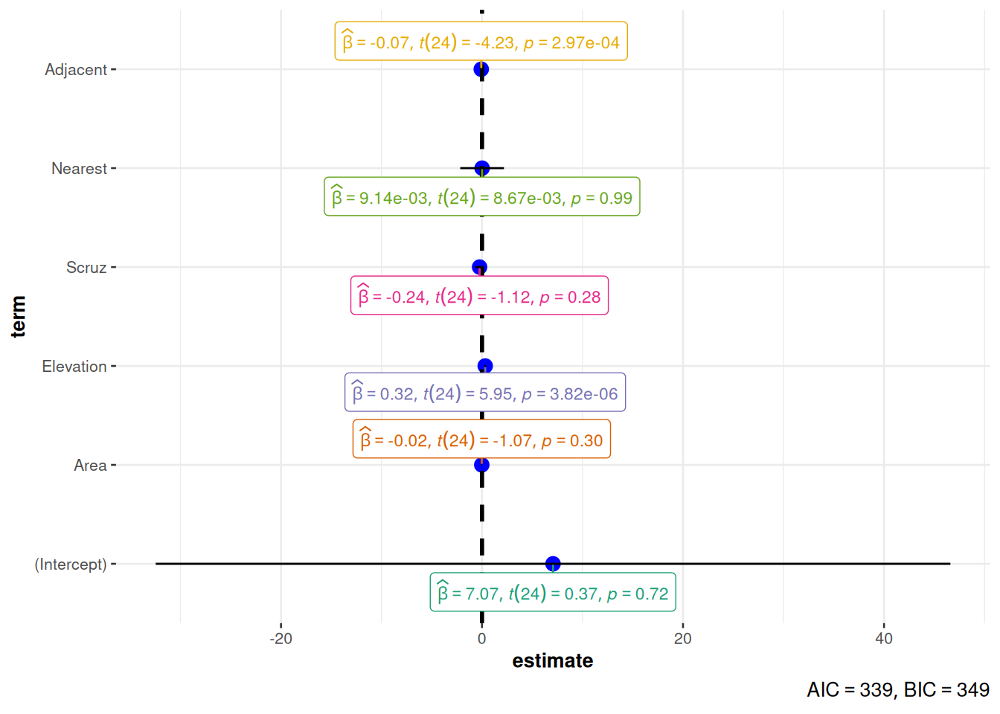

library(ggstatsplot)
lmod_sqrt <- lm(Species ~ Area + Elevation + Scruz + Nearest + Adjacent,
data=gala)
ggcoefstats(lmod_sqrt)

Una de las aplicaciones principales de la visualización de datos es la de crear gráficos para evaluar nuestros modelos y algoritmos. La representación gráfica de diferentes métricas de evaluación nos permiten comprobar si nuestros modelos están cumpliendo los requisitos previos exigibles para su validez, así como confirmar que el ajuste es suficientemente bueno, que el modelo está correctamente calibrado, detectar una posible dependencia de datos particulares, y muchas otras aplicaciones.
Por último, también comentaremos el importante aspecto de la explicabilidad de modelos y algoritmos, que intenta aclarar el proceso que siguen para devolver un determinado resultado y que, de esa forma, entendamos mejor su funcionamiento interno. En este apartado, la visualización de datos también juega un papel esencial.
Existen diversas herramientas que nos permiten generar gráficas de evaluación de modelos estadísticos y algoritmos en R.
El diagnóstico de los modelos de regresión siempre se ha apoyado en la utilización de diagramas y gráficos para su evaluación crítica y la detección de posibles elementos problemáticos o que requieran especial atención.
Tomemos como ejemplo el conjunto de datos gala de paquete faraway, que contiene datos sobre un estudio sobre la ubicación de diferentes especies vegetales en las islas Galápagos.
library(faraway)
data(gala)
lmod <- lm(Species ~ Area + Elevation + Scruz + Nearest + Adjacent,
data=gala)
plot(lmod)gala. Fuente: (J. Faraway, 2022).
Algunos paquetes como ggstatsplot (Patil, 2021) permiten generar gráficos un poco más sofisticados para resumir el resultado de nuestros modelos y generar gráficos para inspeccionar su ajuste. Por ejemplo, en (J. J. Faraway, 2014) se sugiere que una transformación de tipo raíz cuadrada sobre la variable de conteo de especies permite mejorar el ajuste del modelo. La Figura 6.2 muestra un resumen gráfico de los coeficientes y tests asociados a este modelo.
library(ggstatsplot)
lmod_sqrt <- lm(Species ~ Area + Elevation + Scruz + Nearest + Adjacent,
data=gala)
ggcoefstats(lmod_sqrt)El paquete adicional ggfortify nos puede ayudar a representar los gráficos de diagnóstico para este modelo de regresión utilizando ggplot2. La Figura 6.3 muestra un ejemplo de gráficos de diagnóstico creados mediante la función autoplot(). Esta función es compatible con diversos tipos de modelos en R, incluyendo modelos lineales generalizados y sus versiones regularizadas (Ridge, Lasso y Elastic-net mediante el paquete glmnet), series temporales, familias de PCA, clustering y análisis de supervivencia.
# Cuidado con este paquete y las implementaciones que ofrece
# Algunos autores desaconsejan su utilización porque suele dar
# problemas de interacción con otros paquetes (sustitución de funciones
# por otras implementaciones menos eficientes)
library(ggfortify)
autoplot(lmod_sqrt, which = 1:6, ncol = 3, label.size = 3)
gala generados con el paquete ggfortify.
Existen más paquetes que amplían el soporte para creación de gráficos de diagnóstico con otros tipos de modelos. Por ejemplo, el paquete ggDiagnose puede generar con ggplot2 gráficos de diagnóstico para modelos generalizados aditivos (GAM). Otro paquete similar que puede ser de interés para estudiantes de Ecología y Ciencias Ambientales es INDperform, con soporte para modelos GAM y GAMM.
Tras las reciente aprobación en 2024 de la Ley sobre Inteligencia Artificial del Parlamento y el Consejo Europeo (Council of European Union, 2024), se considera de vital importancia en el nuevo contexto de aplicación de algoritmos y modelos de IA en el seno de la UE la inclusión de mecanismos que faciliten su explicabilidad e interpretabilidad de los resultados que devuelven. En este contexto, se ha acuñado en inglés el concepto de Explanaible Artificial Intelligence (XAI) como un conjunto de herramientas y métodos para explicar e interpretar modelos de ML.
Al contrario que los modelos lineales, lineales generalizados o los árboles de decisión y métodos basados en ellos (e.g. Random Forest), muchos modelos de aprendizaje automático (ML) se comportan normalmente como si fuesen modelos opacos (black-box models), cuyo funcionamiento interno es dificil de comprender. A pesar de ello, en muchos casos es imprescindible que podamos crear gráficos y resultados que permitan comprender, al menos intuitivamente, las relaciones entre las variables entrantes y las salidas del algoritmo.
En R existen, entre otros, dos paquetes principales que implementan métodos y herramientas para XAI:
El paquete iml (Molnar et al., 2018) incluye un buen número de herramientas agnósticas de modelo para AIX (es decir, que son válidas para varios modelos y algoritmos sin particularidades que las hagan incompatibles con alguno de ellos). Estas herramientas están explicadas de forma más amplia en un excelente libro sobre ML interpretable publicado por uno de los autores del paquete (Molnar, 2024).
DALEX (Descriptive mAchine Learning EXplanations) (Biecek & Burzykowski, 2021) es un paquete que propone todo un framework para explicabilidad de modelos ML. Su punto de entrada es la función explain() que envuelve un modelo predictivo posibilitando a partir de ese momento la aplicación de diversas herramientas de XAI más sofisticadas. La Figura 6.4 resume el flujo de trabajo estándar con el paquete DALEX y muestra la gran diversidad de modelos procedentes de otros paquetes que son compatibles con las herramientas de XAI incluidas en este framework.
A su vez, la Figura 6.5 muestra la organización y conexiones entre las diferentes herramientas incluidas en el paquete DALEX para XAI.
DALEX.
DALEX.
El paquete DALEX es parte del ecosistema DrWhy.AI, un conjunto de paquetes R para abordar la exploración visual, explicación y diagnóstico de modelos predictivos: https://github.com/ModelOriented/DrWhy. Incluye adaptadores para compatibilidad con un gran número de paquetes de modelado y ML en R (y otras tecnologías, como H2O), así como herramientas de explicabilidad de modelos y algoritmos, tanto agnósticas del modelo como específicamente diseñadas para cierto tipo de modelos. Por último, también incluye herramientas que automatizan la exploración y diagnóstico interactivos de modelos y algoritmos: los paquetes modelStudio (interactivo) y modelDown (resumen explicativo de modelos en HTML). La Figura 6.6 muestra un ejemplo de un gráfico de importancia de variables para interpretar el papel que juegan en las predicciones devueltas por diferentes modelos estadísticos aplicados al mismo conjunto de datos.
modelDown. Fuente: https://github.com/ModelOriented/modelDown.